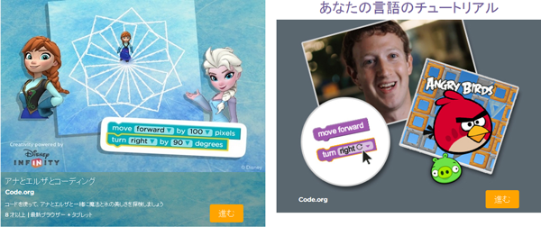
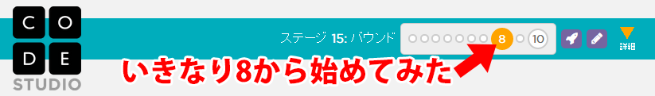
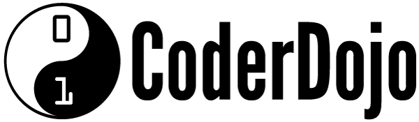

このページは、主にCode.orgの初歩的な使い方の補足説明をしています。
Code.orgのホームページ（http://code.org/）にアクセスして、「始める」をクリックします。
「アナとエルザとコーディング」はアナとエルザ、「あなたの言語のチュートリアル」はアングリーバードを使って学習を進めることができます。

学習時間の目安は、どちらも1時間程度です。好きな方を選びましょう。
アナとエルザの場合は、トップページを少しスクロールして「Code Studioを試す」の中の「Hour of Code」からも選択できます。
Hour of Codeの課題を全てクリアした、全てクリアしていないけれど他の課題に挑戦してみたい場合にも、様々なカリキュラムが用意されています。
まずはCode.orgのホームページにアクセスして、「Code Studioを試す」の中の「初級コース」をクリックします。
Hour of Codeが4コース、20時間コースが4コース用意されています。好きな課題に挑戦してみましょう。
課題は順番解いていくのが望ましいですが、好きな課題から解くこともできます。

CoderDojoへの参加をお待ちしております!!:D
